非线性系统的最优控制器论文整理
仿射非线性系统：
Al-Tamimi, A., Lewis, F. L. & Abu-Khalaf, M. Discrete-Time Nonlinear HJB Solution Using Approximate Dynamic Programming: Convergence Proof. IEEE Trans. Syst., Man, Cybern. B 38, 943–949 (2008).
这篇文章的主要贡献是给出了使用值迭代的启发式算法求解仿射非线性系统的收敛性的证明
1.首先给出了HDP 值迭代算法，是一个求解离散时间HJB方程的在线算法：
给定一个初始值函数\(V_0(x)=0\)，然后，根据Bellman方程求解控制策略\(u_0\)
\(u_{o}\left(x_{k}\right)=\arg \min _{u}\left(x_{k}^{T} Q x_{k}+u^{T} R u+V_{0}\left(x_{k+1}\right)\right)\)
一旦这个\(u_0\)求出来以后，可以求得该时刻的价值函数：
\(\begin{aligned} V_{1}\left(x_{k}\right) &=x_{k}^{T} Q x_{k}+u_{0}^{T}\left(x_{k}\right) R u_{0}\left(x_{k}\right)+V_{0}\left(f\left(x_{k}\right)+g\left(x_{k}\right) u_{0}\left(x_{k}\right)\right) \\ &=x_{k}^{T} Q x_{k}+u_{0}^{T}\left(x_{k}\right) R u_{0}\left(x_{k}\right)+V_{0}\left(x_{k+1}\right) \end{aligned}\)
HDP算法是一个增量式的优化算法，需要不断在策略与值函数之间进行交互迭代，简而言之，利用policy improvement来根据值函数求得最优策略，然后用求得的策略与环境进行交互，得到trajectory，然后计算值函数，如此反复下去
这个过程可以表示为：
\(\begin{aligned} u_{i}\left(x_{k}\right) &=\arg \min _{u}\left(x_{k}^{T} Q x_{k}+u^{T} R u+V_{i}\left(x_{k+1}\right)\right) \\ &=\arg \min _{u}\left(x_{k}^{T} Q x_{k}+u^{T} R u+V_{i}\left(f\left(x_{k}\right)+g\left(x_{k}\right) u\right)\right) \\ &=\frac{1}{2} R^{-1} g\left(x_{k}\right)^{T} \frac{\partial V_{i}\left(x_{k+1}\right)}{\partial x_{k+1}} \end{aligned}\)
对于仿射非线性系统，可以表示成上述的形式，而对于非仿射非线性系统，由于没有\(g(x_k)\)的这种特定的形式，所以不能写成上面这种形式，但是也是按照第一个形式来进行数值求解
\(\begin{aligned} V_{i+1}\left(x_{k}\right) &=\min _{u}\left(x_{k}^{T} Q x_{k}+u^{T} R u+V_{i}\left(x_{k+1}\right)\right) \\ &=x_{k}^{T} Q x_{k}+u_{i}^{T}\left(x_{k}\right) R u_{i}\left(x_{k}\right)+V_{i}\left(f\left(x_{k}\right)+g\left(x_{k}\right) u_{i}\left(x_{k}\right)\right) \end{aligned}\)
值迭代相比于策略迭代不需要初始容许策略，而一般的非线性系统往往很难找到初始容许的策略，所以很多方法往往用的都是值迭代
策略迭代每次需要策略评估，而策略评估理论上来说需要计算无穷次才能收敛，
值迭代和策略迭代的关系：值迭代是策略评估过程只进行一次的策略迭代算法，
Theorem1:考虑序列\(V_i\)和\(u_i\)，如果\(V_0(x_k)=0\)，则\(V_i\)是一个非减序列，对于\(\forall i: V_{i+1}\left(x_{k}\right) \geq V_{i}\left(x_{k}\right)\)，当\(i \rightarrow \infty, V_{i} \rightarrow V^{*}, u_{i} \rightarrow u^{*}\)
本文提出的HDP算法流程图（其实就是Value Iteration算法）
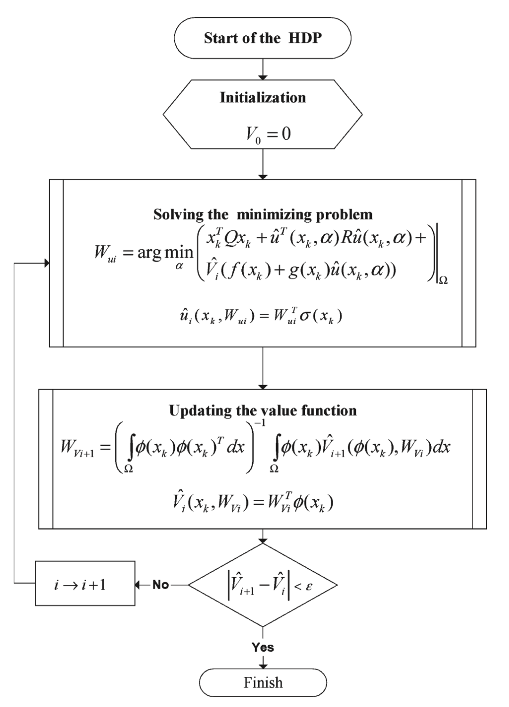
Liu, D. & Li, H. Optimal control for discrete-time affine non-linear systems using general value iteration. IET Control Theory & Applications 6, 2725–2736 (2012).
这篇文章的研究目标和Al-Tamimi的这篇一样，都是仿射非线性系统，但是Tamimi的文章中用的是一般的VI算法，它假设\(V_{0}(\cdot)=0\)，而liu的这篇文章假设\(V_{0}\left(x_{k}\right)=x_{k}^{\mathrm{T}} P_{0} x_{k}\)，并在此条件下得到了和Tamimi的更加一般的结论，并给出了值函数收敛的证明。
Theorem1：定义控制序列\(\{v_i\}\)，值函数序列\(\{V_i\}\)，\(V_{0}\left(x_{k}\right)=x_{k}^{\mathrm{T}} P_{0} x_{k}\)，如果\(V_{0}\left(x_{k}\right) \geq V_{1}\left(x_{k}\right)\)对于所有\(x_k\)都成立，则值函数\(\{V_i\}\)是一个非增序列，如果\(V_{0}\left(x_{k}\right) \leq V_{1}\left(x_{k}\right)\)对于所有\(x_k\)都成立，则值函数\(\{V_i\}\)是一个非减序列
证明过程采用数学归纳法
Theorem3：控制序列\(\{v_i\}\)和值函数\(\{V_i\}\)依次使用策略改进和策略评估的表达式进行迭代，如果\(V_{0}\left(x_{k}\right)=x_{k}^{\mathrm{T}} P_{0} x_{k} \geq V_1(x_k)\)对所有的\(x_k\)都成立，则值函数\(V_i(x_k)\)是一个Lyapuonv函数，且系统的控制策略\(v_i(x_k)\)是是渐进稳定的
这些定理的证明是为了说明随着迭代次数的增加值函数\(V(x_k)\)慢慢收敛到最优值，下界逐渐增大，上界逐渐减小
HDP算法的结构框图
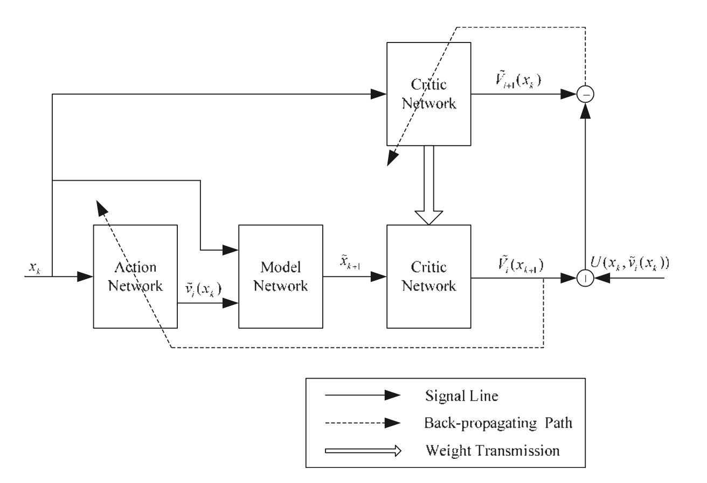
仿真实例
\(\begin{aligned} &f\left(x_{k}\right)=\left[\begin{array}{c} 0.9 x_{1_{k}}+0.1 x_{2_{k}} \\ -0.05\left(x_{1_{k}}+x_{2_{k}}\left(1-\left(\cos \left(2 x_{1_{k}}\right)+2\right)^{2}\right)\right)+x_{2_{k}} \end{array}\right]\\ &g\left(x_{k}\right)=\left[\begin{array}{c} 0 \\ 0.1 \cos \left(2 x_{1_{k}}\right)+0.2 \end{array}\right] \end{aligned}\)
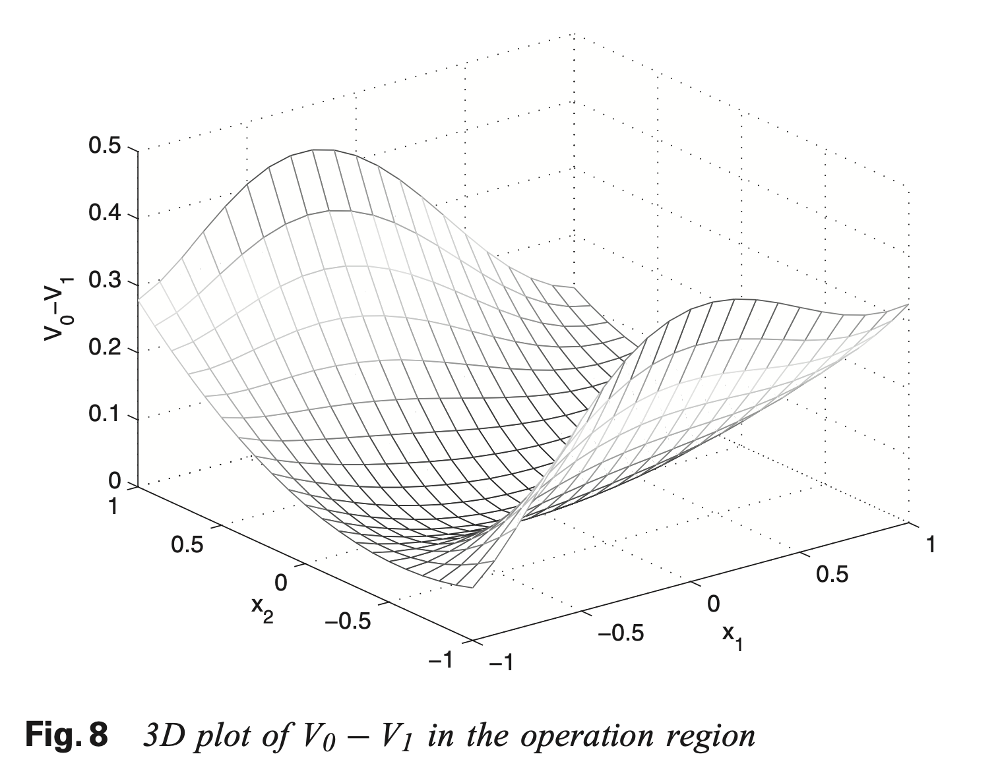
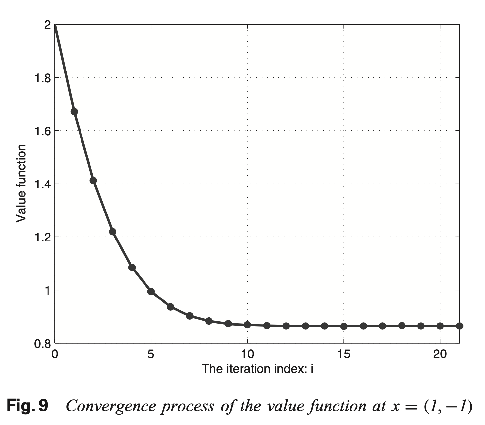
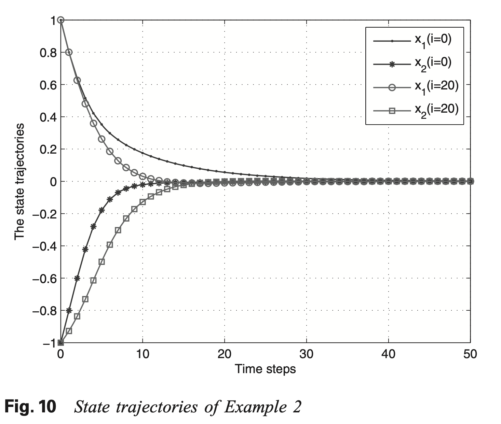
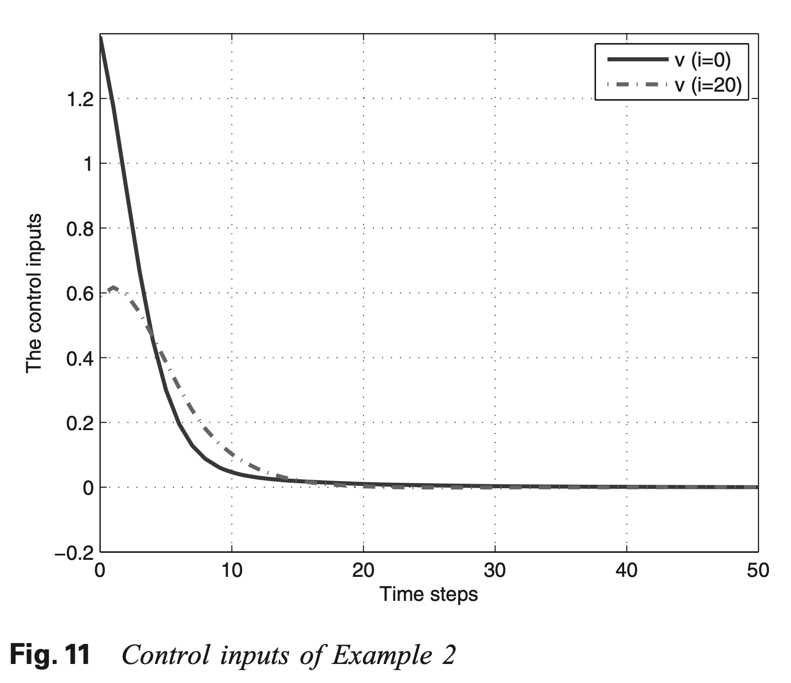
Wei, Q. & Liu, D. Neural-network-based adaptive optimal tracking control scheme for discrete-time nonlinear systems with approximation errors. Neurocomputing 149, 106–115 (2015).
这篇文章研究了基于ADP的最优跟踪控制问题，
非仿射非线性系统：
Liu, D. & Wei, Q. Policy Iteration Adaptive Dynamic Programming Algorithm for Discrete-Time Nonlinear Systems. IEEE Trans. Neural Netw. Learning Syst. 25, 621–634 (2014).
这篇文章研究了基于策略迭代的最优控制问题
对于值迭代的方法，给定一个初始为0的性能指标函数，可以证明迭代的性能指标函数是非减的序列且有界，当迭代次数趋向于无穷时，性能指标函数趋向于最优性能指标，但是，这也带来了一个问题，因为理论上需要迭代无穷次才能收敛，所以效率比较低
因为策略迭代算法需要一个初始容许的控制才能保证收敛，所以找到这个初始容许的控制策略很重要，这篇文章给出了一个找到初始容许控制策略的方法：
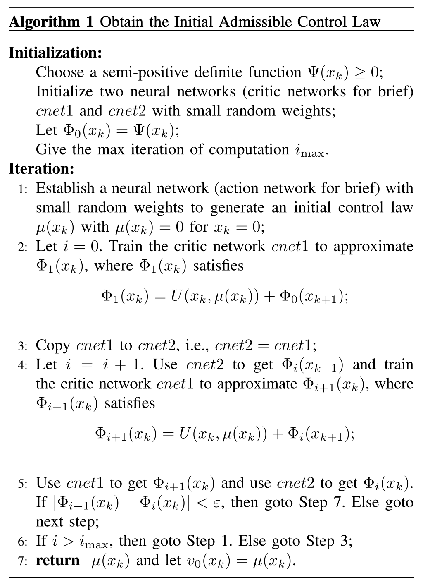
离散时间策略迭代算法：
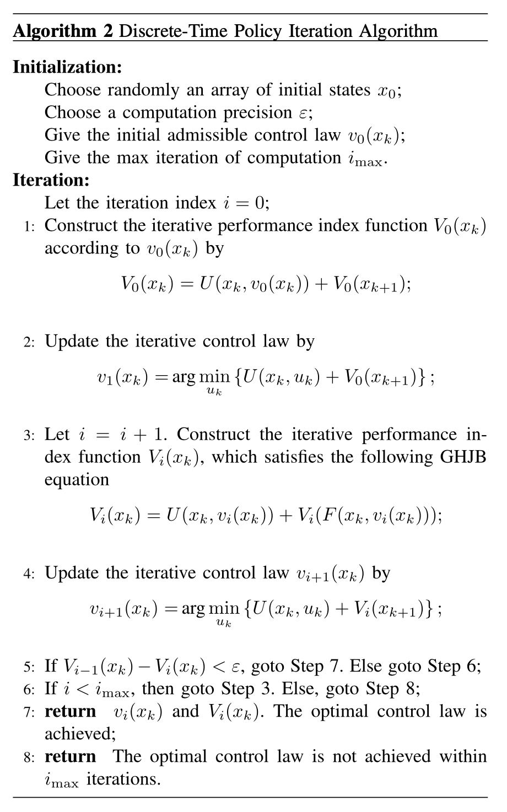
仿真实例
1.线性系统：
\(x_{k+1}=A x_{k}+B u_{k}\)
其中，\(A=\left[\begin{array}{cc} 0 & 0.1 \\ 0.3 & -1 \end{array}\right], \quad B=\left[\begin{array}{c} 0 \\ 0.5 \end{array}\right]\)
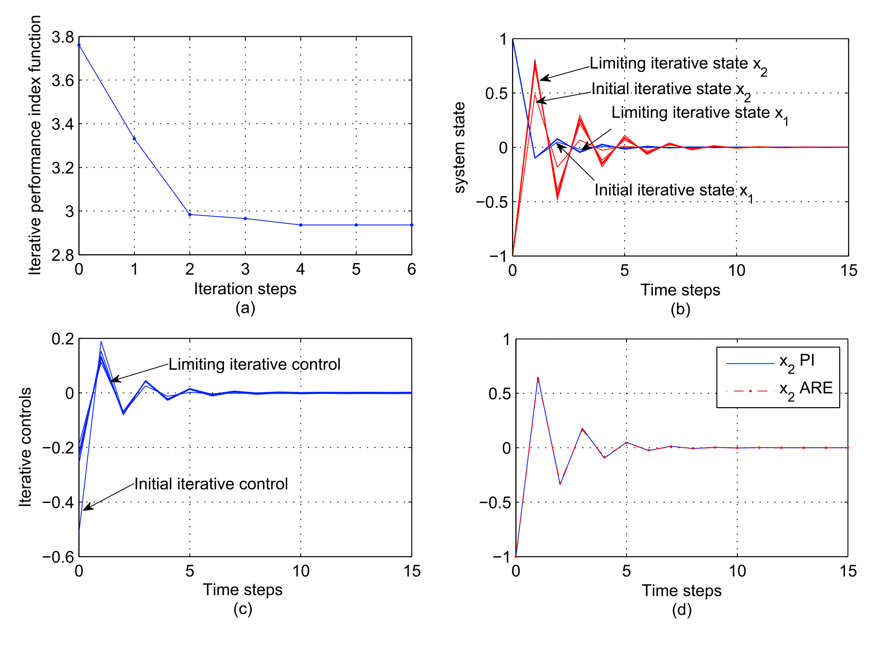
2.仿射非线性系统
\(x_{k+1}=f\left(x_{k}\right)+g\left(x_{k}\right) u_{k}\)
其中，\(f\left(x_{k}\right)=\left[\begin{array}{c} 0.2 x_{1 k} \exp \left(x_{2 k}^{2}\right) \\ 0.3 x_{2 k}^{3} \end{array}\right], \quad g\left(x_{k}\right)=\left[\begin{array}{c} 0 \\ -0.2 \end{array}\right]\)
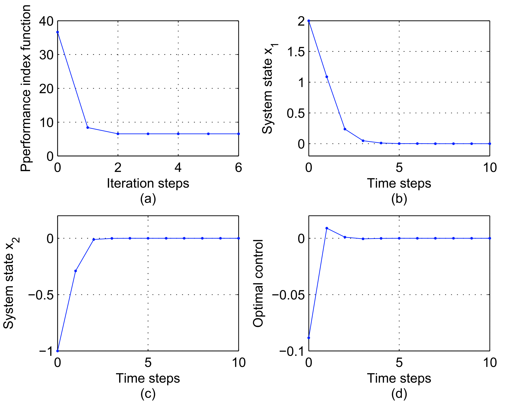
Luo, B., Liu, D., Wu, H.-N., Wang, D. & Lewis, F. L. Policy gradient adaptive dynamic programming for data-based optimal control. IEEE transactions on cybernetics 47, 3341–3354 (2016).
这篇文章研究了无模型的非仿射非线性离散时间系统的最优控制，提出了基于策略梯度的ADP算法，是一个off-policy算法，off-policy算法相对于on-policy算法，行为策略(behaviour policy)和目标策略(target policy)不是同一个策略，可以保持良好的''exploration'的性质，因为on-policy基于当前的策略直接执行一次动作选择，然后用这个样本去更新当前的策略，因此，生成样本时的策略和学习时的策略是同一个策略，而on-policy算法通常光利用已知的最优动作的选择，往往学习不到最优解，可能陷入局部最优
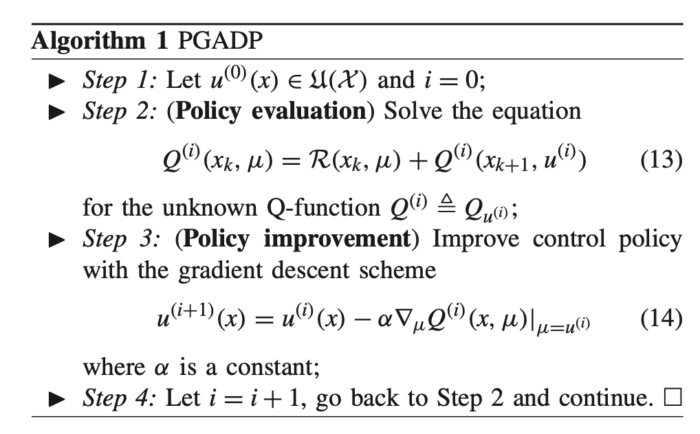
文章给出了算法收敛性的证明，但是一般情况下，策略梯度算法往往需要大量采样，具有随机性的特征，证明过程需要引入期望。而这篇文章中，其实证明的还是policy iteration的方法的收敛性，通过证明价值函数是一个单调非增序列。
具体实现也是采用两个神经网络构成的actor-critic框架
仿真实例：
非仿射非线性系统
\(x_{k+1}=\left[\begin{array}{c} \left(x_{k, 1}+x_{k, 2}^{2}+u_{k}\right) \cos \left(x_{k, 2}\right) \\ 0.5\left(x_{k, 1}^{2}+x_{k, 2}+u_{k}\right) \sin \left(x_{k, 2}\right) \end{array}\right]\)
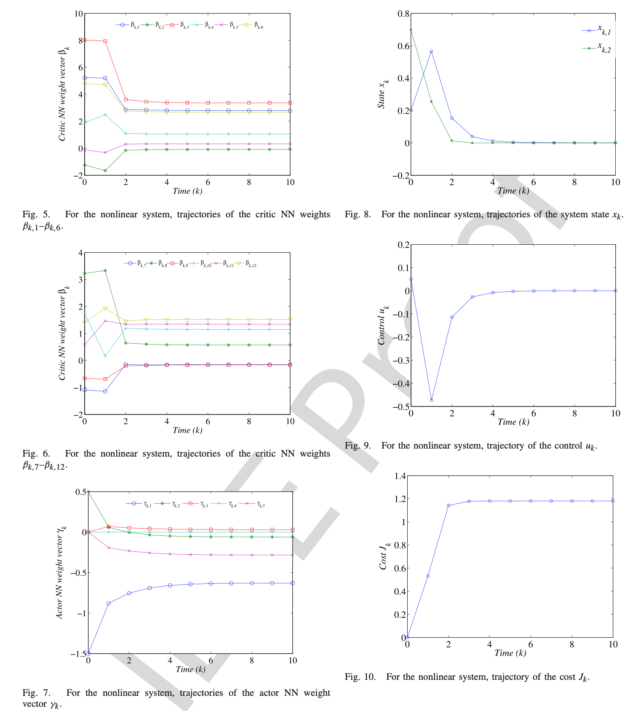
Zhang, Y., Zhao, B. & Liu, D. Deterministic policy gradient adaptive dynamic programming for model-free optimal control. Neurocomputing 387, 40–50 (2020).
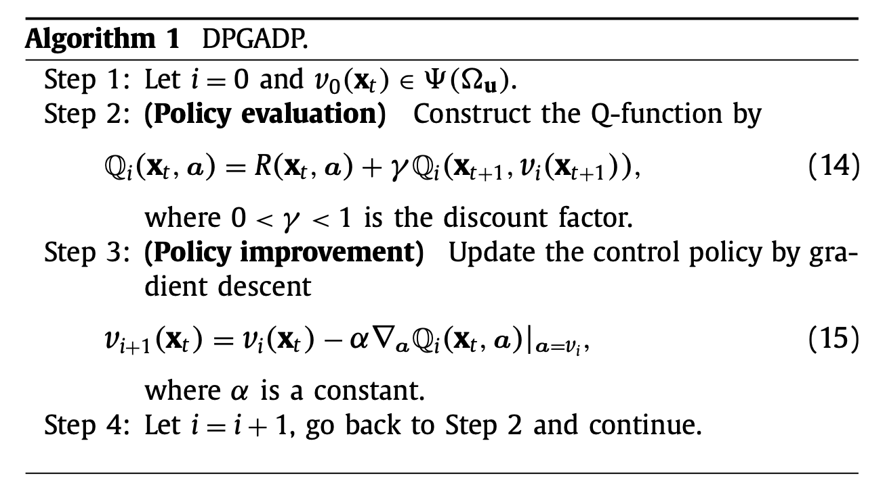
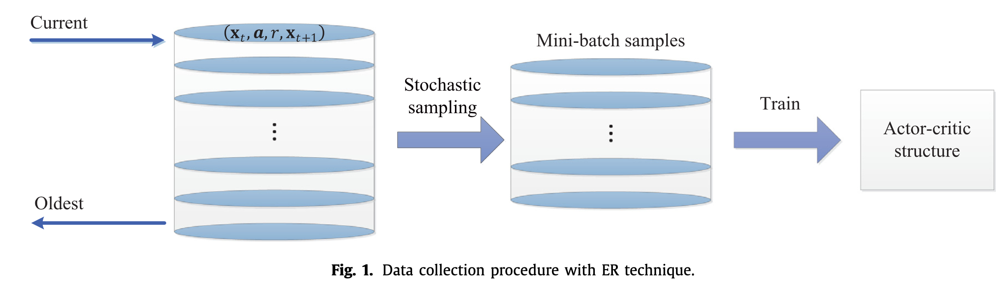
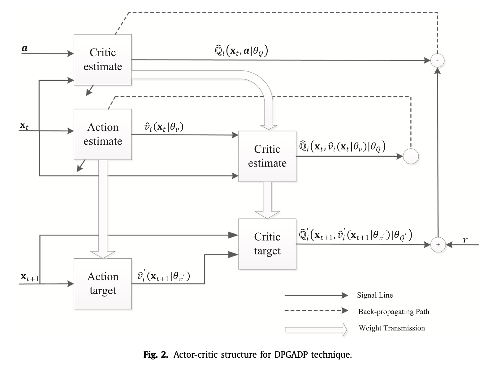
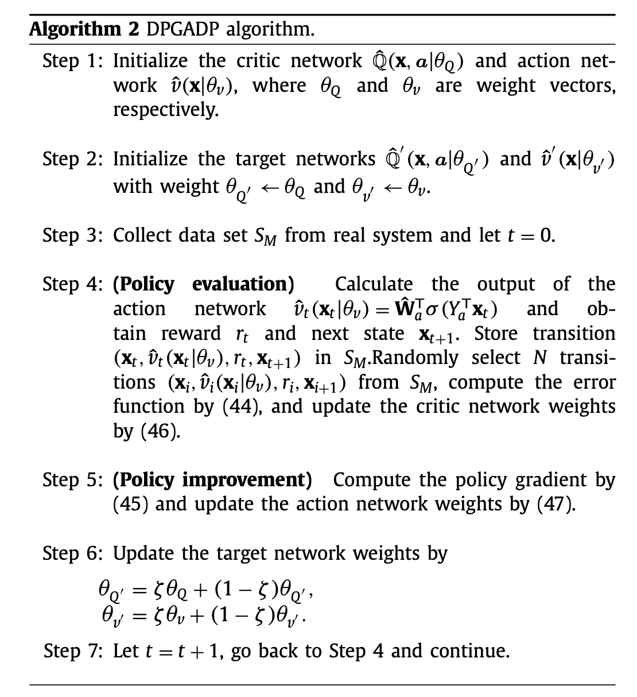
关于上述几篇文章的问题：
文章结构和证明过程都是一个套路：
- 首先给出算法流程（策略迭代，值迭代，策略梯度，确定策略梯度等算法，基本上都是直接将CS提出的算法复制过来，没有改变）
- 然后证明该算法的性能指标函数能够收敛到最优值（非仿射系统的几篇文章虽然使用了策略梯度等算法，但是其证明的其实还是策略迭代算法，基本方法是通过构造误差函数，即\(e=V_i-V_{i+1}\)，随着迭代次数的增多，误差函数趋近于0）
- 然后证明性能指标函数是一个非增序列，即算法每次的改进都能够保证越来越好
- 上述所有的算法都是actor-critic结构，需要用到两个网络，如果需要辨识系统模型，则需要增加一个模型的网络，证明网络权重会收敛到最优值。
创新点很弱：基本上上面几篇文章中所有的方法，策略迭代，值迭代，策略梯度，确定策略梯度等算法都是CS领域提出来的算法，但是这些文章将这些方法和最优控制结合起来考虑（这是很多文章的主要贡献），多篇文章都提到了类似的contribution
'the Q-function based ADP methods are rarely studied for general discrete-time nonlinear systems, and the data-based PGADP algorithm is proposed for model-free optimal control design in this paper. Detailed merits of the PGADP algorithm can be found in'
训练过程没有给出来：所有的仿真过程给出的结果都是利用训练好的模型来求解控制策略\(u\)，而其训练过程没有给出来，虽然有些文章中说利用100个数据进行训练就能收敛，但是从我仿真的过程来看，很难实现。
实际意义有限：这些方法，包括策略迭代，值迭代，策略梯度，确定策略梯度等算法在其原始的文章就已经得到了很多很好的结果，其解决的问题的复杂度和难度远比这些文章中给出的仿真实例的仿射非线性系统，非仿射非线性系统要大得多，所以，个人认为这些文章只是将CS领域的结果复制过来，推导他们的结果（很多推导都是换了一些方法，实际结果都还是CS领域的）。